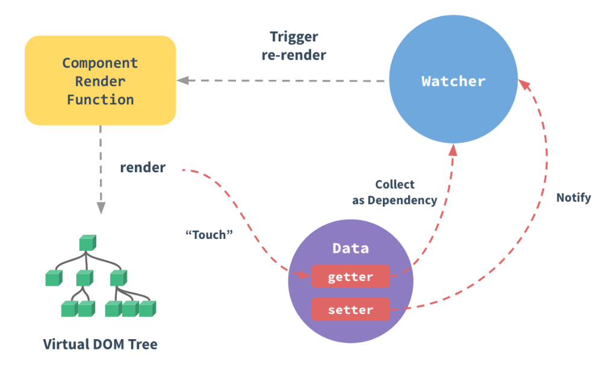
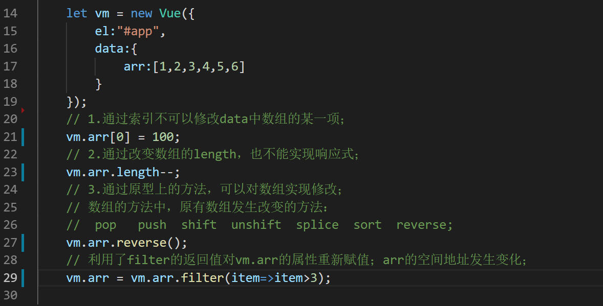
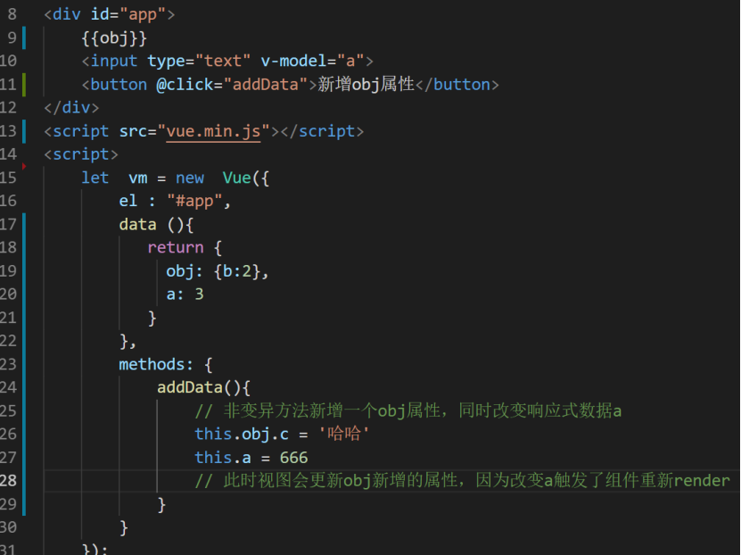
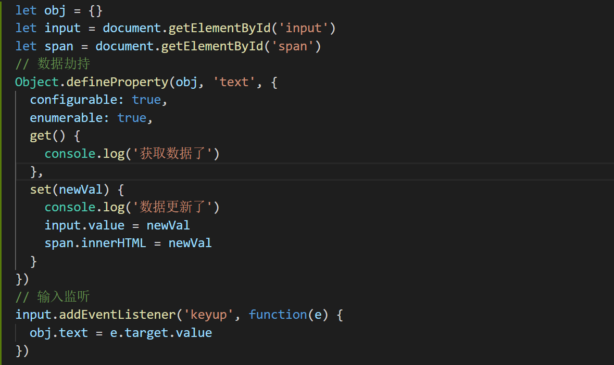

原文连接:https://www.cnblogs.com/jiajialove/p/11323105.html
Vue 的响应式原理是核心是通过 ES5 的保护对象的 Object.defindeProperty 中的访问器属性中的 get 和 set 方法，data 中声明的属性都被添加了访问器属性，当读取 data 中的数据时自动调用 get 方法，当修改 data 中的数据时，自动调用 set 方法，检测到数据的变化，会通知观察者 Wacher，观察者 Wacher自动触发重新render 当前组件（子组件不会重新渲染）,生成新的虚拟 DOM 树，Vue 框架会遍历并对比新虚拟 DOM 树和旧虚拟 DOM 树中每个节点的差别，并记录下来，最后，加载操作，将所有记录的不同点，局部修改到真实 DOM 树上。

虚拟DOM (Virtaul DOM): 用 js 对象模拟的，保存当前视图内所有 DOM 节点对象基本描述属性和节点间关系的树结构。用 js 对象，描述每个节点，及其父子关系，形成虚拟 DOM 对象树结构。
项目中常遇到的关于vue响应式的记录与总结：
因为只要在 data 中声明的基本数据类型的数据，基本不存在数据不响应问题，所以重点介绍数组和对象在vue中的数据响应问题，vue可以检测对象属性的修改，但无法监听数组的所有变动及对象的新增和删除，只能使用数组变异方法及$set方法。

可以看到，arrayMethods 首先继承了 Array，然后对数组中所有能改变数组自身的方法，如 push、pop 等这些方法进行重写。重写后的方法会先执行它们本身原有的逻辑，并对能增加数组长度的 3 个方法 push、unshift、splice 方法做了判断，获取到插入的值，然后把新添加的值变成一个响应式对象，并且再调用 ob.dep.notify() 手动触发依赖通知，这就很好地解释了用 vm.items.splice(newLength) 方法可以检测到变化。。
1. 向响应式的数组或者对象中修改已有的属性的方法
当想要修改对象或者属性，并非新增属性时，一个已经在 data 中声明过的响应式数据，可以直接操作改变，数据改变会经过上图的步骤，触发视图改变。直接obj.xxx = xxx 即可，数组除外，但是后台传过来的 json 数组，数组中嵌套的对象也可以直接修改数组中的对象，因为 Object.defindeProperty 的缺陷导致无法监听数组的变动，但始终会深度遍历data中数据，给数组中嵌套的对象添加上 get 和 set 方法，完成对对象的监听。所以数组中嵌套的对象的情况是可以直接修改数组中的对象，并且保持响应式。
2. 向响应式的数组或者对象中新增一个响应式的属性的方法this.$set()或者数组变异方法
即使是一个后台传过来的 json 数组，也可以使用this.$set向数组中的其中一个对象中添加一个响应式的属性，例如 this.$set(arr[0], 'xxx', xxx) 。或者使用数组变异方法例如splice，更多数组变异方法可以参考vue文档。
3. data中声明过的数组或者对象，整体替换数组或者对象保持响应式
向响应式的数组和对象替换为新的响应式数据，可直接复制，因为data中声明的数据已经添加了访问器属性setter，当重新赋值一个新的堆内存地址时，该数组或者对象也会被循环遍历添加访问器属性，所以也是有响应式的。

4. vue无法监听对象的新增和删除，直接通过obj.xxx = xxx新增一个没有的属性，同时修改当前组件的一个响应式的数据，会重新触发当前组件重新render，可以让非响应式数据也保持更新状态（并非响应式） 。
给一个数据添加一个非响应式的数据，例如一个已经在data中声明过的数据obj，obj.xxx=xxx,新增一个原本没有的数据，同时修改组件中一个其他的响应式数据，该obj也会同步更新到最新的数据，另一种情况，当你向一个对象或者数组中同时增加一个响应式和非响应式数据，非响应式数据也会同步更新到页面。
总结：只要触发当前组件重新render,就可以让数据保持更新的状态，例如this.$forceUpdate()。

为什么vue不能监听数组的变化？
Object.defindProperty虽然能够实现双向绑定了，但是还是有缺点，只能对对象的属性进行数据劫持，所以会深度遍历整个对象，不管层级有多深，只要数组中嵌套有对象，就能监听到对象的数据变化无法监听到数组的变化，Proxy就没有这个问题，可以监听整个对象的数据变化，所以用vue3.0会用Proxy代替definedProperty。
最后实现一个数据双向绑定原理

更深的底层原理还在学习中，完全消化以后会继续分享，嗯，就酱~